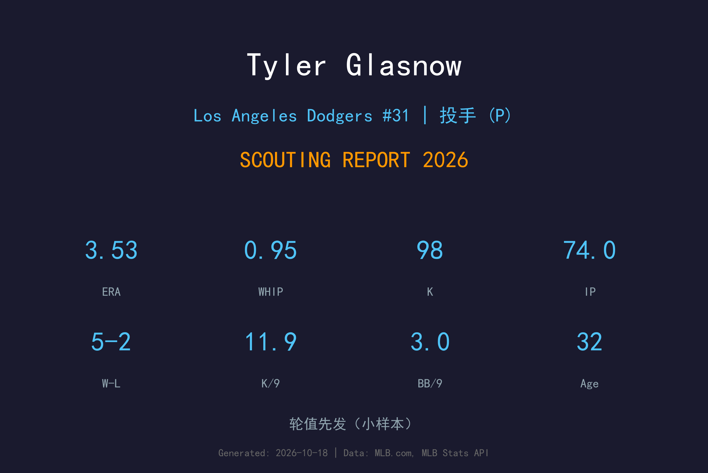
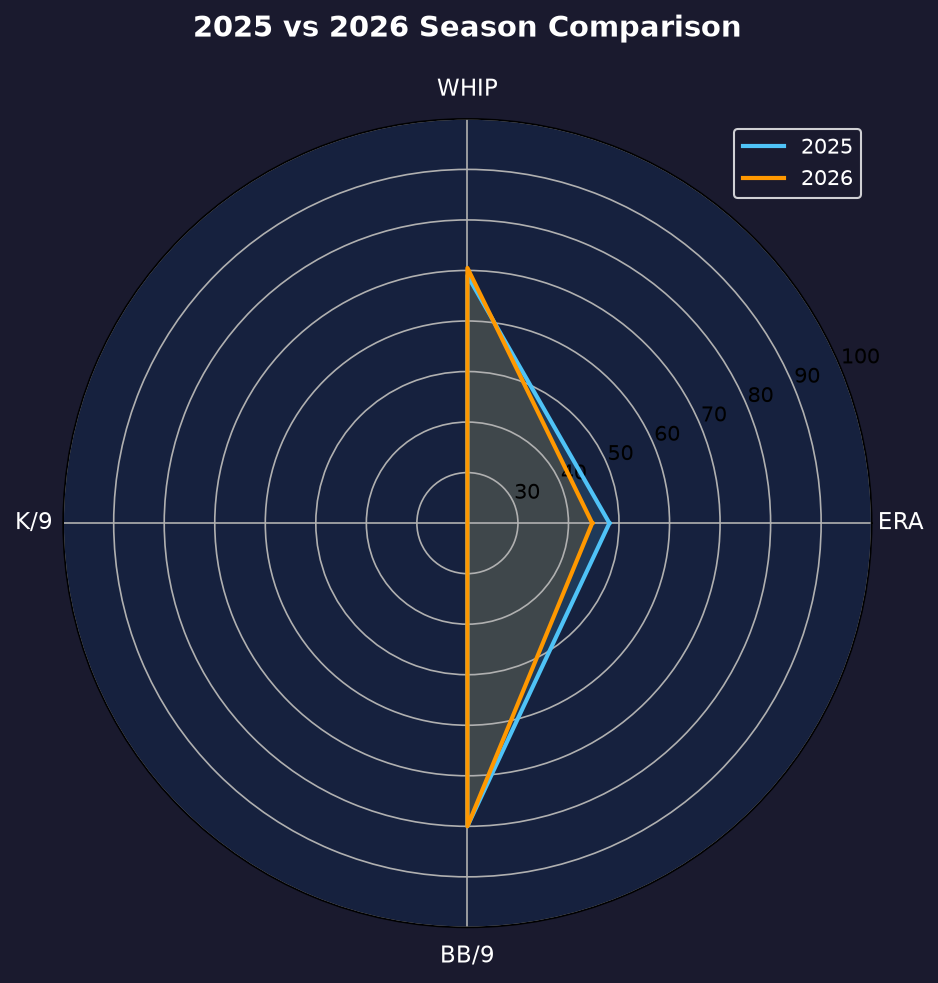
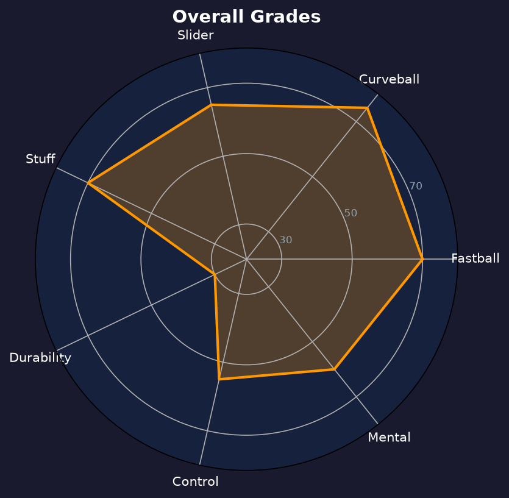

Los Angeles Dodgers #31 | 先发投手 | 右投 / 左打 | 玻璃巨炮

Tyler Glasnow 是天赋与伤病并存的最极端案例——6'8" 的巨躯、100mph 速球、联盟最犀利的曲球，但连续多年的伤病让他的生涯始终差一口气。
2026年他仅13场先发（再次因伤缺阵大半赛季），但 5胜2败、3.53 ERA、0.95 WHIP、74局98次三振（11.9 K/9）的效率仍是顶级。当他在场上时，他就是联盟最难对付的投手之一。
33岁的 Glasnow 已经与"健康"二字渐行渐远。他的每一次登板都是球迷的馈赠，而道奇能做的，就是继续为他的天赋投保、为他的恢复祈祷。
12胜6败、1.78 ERA，赛扬奖票选前列，确立"天赋顶级"的地位。
被交易至洛杉矶后，与山本组成令和+美式天赋的豪华轮值。
13场先发、11.9 K/9、0.95 WHIP，用最少局数交出顶级效率。

| 赛季 | GS | W-L | ERA | IP | SO | BB | WHIP |
|---|---|---|---|---|---|---|---|
| 2025 | 18 | 4-3 | 3.19 | 90.1 | 106 | 43 | 1.10 |
| 2026 | 13 | 5-2 | 3.53 | 74.0 | 98 | 25 | 0.95 |
出赛场次从18降至13，但 WHIP 从1.10降至0.95、保送从43减至25——更少的局数、更高的效率。
球速：97-100 mph
评分：A
6'8" 巨躯投出的速球从打者头顶俯冲而下，视觉效果与实战效果都极具压迫感。
球速：82-85 mph
评分：A+
他的招牌武器。下坠幅度极大且旋转犀利，是制造挥空与 weak contact 的终极手段。
球速：88-91 mph
评分：A-
速球与曲球之间的中间武器，让打者无法预测下一步。
0.95 WHIP 意味着平均每9局不到1人上垒，这是赛扬奖级别的数据。11.9 K/9 与 3.92 K/BB 比显示他的 stuff 完全未老化——他的问题从来不是"能不能投"，而是"能不能上场"。
13场先发是他职业生涯的缩影：2025年18场、2024年22场、2023年21场……几乎没有任何一季超过25场先发。他的伤病从手肘到背部到肩部，几乎覆盖了投手所有可能受伤的部位。6'8" 的身高既是天赋也是诅咒——过长的力臂让他在投球时承受更大的压力。
5胜2败、0.95 WHIP——如果这能延长至30场先发，他就是赛扬奖的最大热门。但现实是他只投到7月就再次进入 IL。道奇已经学会"有 Glasnow 的日子是礼物"的心态，不再为他的缺阵愤怒，只为他的回归庆幸。

天赋满分的玻璃巨炮，健康是他唯一也是最大的敌人
B+ 级 / 高风险高天赋
道奇 2026 季后赛战绩：NLDS 3-1 晋级、NLCS 0-4 止步。
| G | GS | IP | ERA | WHIP | SO | BB | H |
|---|---|---|---|---|---|---|---|
| 2 | 2 | 9.0 | 5.00 | 1.22 | 11 | 7 | 4 |
Tyler Glasnow 的2027赛季没有宏大的目标，只有一个简单的愿望：健康投完一个完整赛季。如果他能做到，赛扬奖仍在射程之内；如果再次伤病，他可能面临合约被重新评估的命运。
2026：5-2、3.53 ERA、74IP——高效但短暂的赛季
2027：目标 25+ 场先发、150+ 局，首次健康完整赛季
2028+：视健康状况，或转型短局数后援延长生涯
Tyler Glasnow 出生于加州圣塔克拉利塔，2016年在匹兹堡海盗登上大联盟。他早期的职业生涯充满挫折——控球问题与伤病让他在海盗始终无法兑现天赋，直到2018年被交易至坦帕湾光芒后，他才迎来爆发。
在光芒，他成为联盟最令人畏惧的投手之一，2019年缴出1.78 ERA 的赛扬奖级赛季。但伤病始终如影随形——从手肘韧带撕裂到背部应力骨折，再到肩部炎症，他的"玻璃"属性让每一季都充满不确定性。
2024年加盟道奇后，他与山本由伸组成豪华轮值，但两人加起来很少同时健康。场外的 Glasnow 以直率与幽默著称，是 MLB 最受欢迎的采访对象之一。他的坦诚让球迷对这位"玻璃巨炮"既心疼又深爱。